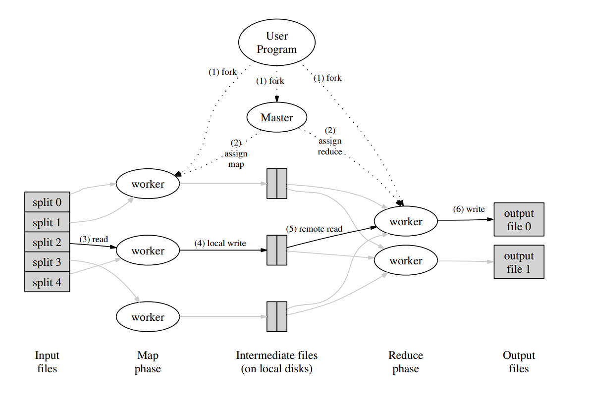

MapReduce Interpretation
Last updated on 18 hours ago
MapReduce Interpretation
Prerequisite
课程主页：MIT6.5840
论文地址：MapReduce
Structure

Concepts
首先需要先解释一些概念：
map：用户自定义函数，以key/value pair作为输入，将会生成一系列intermediate key/value pair (mid-key, mid-value)。MapReduce框架将会将具有相同的 \(\text{key}\ I\) 的中间值收集起来（将会得到mid-key, []value），然后传递给ReduceReduce：用户自定义函数，接收mid-key, []mid-value，对其处理后得到零个或一个输出
原文描述如下：
Map, written by the user, takes an input pair and produces a set of intermediate key/value pairs. The MapReduce library groups together all intermediate values associated with the same intermediate key \(I\) and passes them to the Reduce function.
The Reduce function, also written by the user, accepts an intermediate key \(I\) and a set of values for that key. It merges together these values to form a possibly smaller set of values. Typically just zero or one output value is produced per Reduce invocation. The intermediate values are supplied to the user’s reduce function via an iterator. This allows us to handle lists of values that are too large to fit in memory.
Worker：运行在主机上的进程，执行由Master分配的TaskMaster：运行在主机上的进程，负责给各个Worker分配任务以及协调整个框架的运行Task：具体运行在Worker上的不同的任务，分为Map Task和Reduce TaskJob：整个Mapreduce执行的所有Task的总和被称为一个job，每个job都由一组task组成
Execution
MapReduce框架将输入文件input file将会被分为 \(M\) 个分片spilts，每个部分通常为 \(\text{16MB}\) 到 \(\text{64MB}\)，随后在机器集群上启动程序实例- 其中一个程序为
Master，其余的全是Worker。一共有 \(M\) 个Map Task和 \(R\) 个Reduce Task需要被赋予给Worker处理。Master将会选择空闲的Worker来分配任务 Map Worker读取每个input spilt，执行完毕的结果存储在本地- 对于每个处在本地磁盘的中间结果而言，它们会被
partition function映射成 \(R\) 个区域region。随后Worker将会将这些中间结果的位置发送给Master，Master则负责将位置转发给Reduce - 当所有的
Map Worker工作完成后，Reduce Worker会被唤醒。后者将会使用RPC来读取Map Worker在本地磁盘内的中间结果（这一步也会产生网络流量）。当Reduce Worker读取完所有的中间结果后，会按照mid-key对输入数据进行排序 Reduce Worker将会遍历所有已排序完毕的数据，将(mid-key, []mid-value)传递给用户自定义的Reduce函数（通常不需要整合所有的输出，因为MapReduce可以链式连接，前者的输出相当于后者的输入）。每个Reduce Worker都会产生一个输出文件，其文件名由用户指定
Map Worker 需要执行的操作包括： - 读取输入文件分片
spilt - 调用 Map 函数 - 对结果进行
partition 并向 Master 通知结果存放的位置
Reduce Worker 需要执行的操作包括： - 等待
Master 唤醒并告知输入文件的位置，然后通过 RPC
进行读取 - 调用 Reduce 函数
除此之外，一开始的文件划分则由 Master 完成
Fault Tolerance
Master 需要存储各个 Map Task 和
Reduce Task 的状态
idel/in-progress/completed 以及标识每个运行
Worker 进程的机器。除此之外，Master
还需要存储由 Map Worker 产生的 \(R\) 个区域 region
的位置以及文件大小
Worker Failure
Master 会周期性地向各个 Worker
发送信号。如果某个 Worker 在一段时间内没有回复，那么
Master 认为该 Worker 崩溃。那么对于该
Worker 而言，有两种情况：
- 对于已经完成
completed或正在进行中in-progress的Map Task而言，该Task的状态将会被重新设置为idel，需要重新执行该任务 - 对于正在进行中
in-progress的Reduce Task而言，会将其状态设置为idel，需要重新执行该任务
对于已完成的 Map Task
需要重新执行的原因在于，它的结果存储在本地，而那台机器已经故障，因此我们无法访问到那台机器的本地磁盘。对于已完成的
Reduce Task
而言，它的结果存储在全局的文件系统中，因此不需要重新执行
Master Failure
我们周期性地向 Master 的存储信息当中写入
checkpoint。当 Master
崩溃时，我们可以重新启动该 Master
程序并能够恢复到崩溃前的数据。然而，由于只有一个
Master，因此其崩溃通常是概率很小的，因此如果
Master 崩溃，论文中的实现会直接将整个
MapReduce 计算给 abort 掉
Atomic Rename
当 Reduce Task 执行完毕后，会将临时的输出文件
temporary output file 重命名为最终的输出文件
final output file。而如果有相同的 Reduce Task
执行在不同的机器上（Reduce Task
被重启过），那么最终得到的输出文件将会完全相同。在此，我们依赖底层的文件系统提供的原子重命名
atomic rename 来保证最终的输出文件只有一个
Backup Task
在执行的过程中总会出现落后者 straggler
拖慢了整体的运行速度。这些 straggler
出现的原因可能是机器本身存在某些故障导致任务的执行速度降低
当 MapReduce 操作快结束的时候，Master
会将仍在运行 in-progress 的 Task
备份并同步执行。只要原始的任务或者备份任务执行完毕，那么该
Task 将会被标记为完成